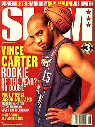
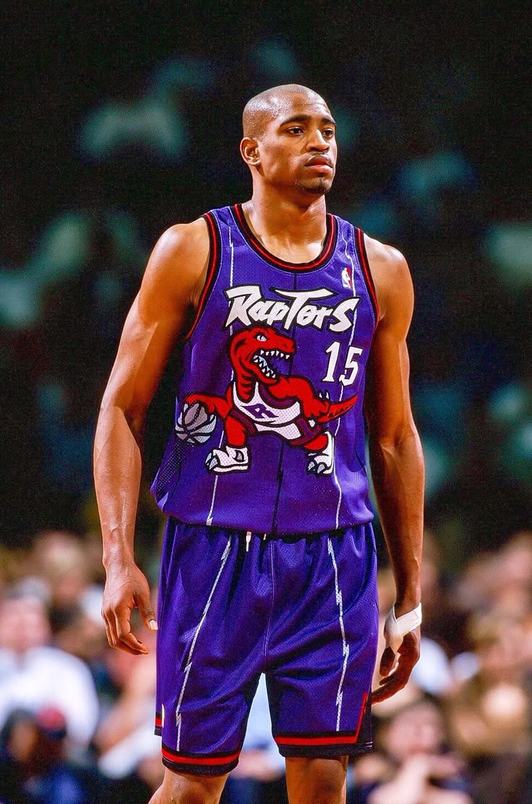

Video Argumentasi
Halaman ini berisi penjelasan mengenai video argumentasi yang telah saya buat untuk proyek Ujian Praktik Terintegrasi.
Topik yang Diangkat
Topik yang saya pilih berkaitan dengan kegiatan internship curriculum dan manfaatnya.
Harapan dari Video
Saya harap video ini bisa memberi gambaran tentang pentingnya dan manfaat-manfaat kegiatan IC bagi seluruh siswa.
Kesan Pesan
Selama kelas IX, saya belajar banyak hal seperti manajemen waktu dan cara belajar efektif. Selama di SMPIT Al Haraki, saya merasa sangat senang dan betah bersama teman-teman dan guru-guru semua.
BERANDA

